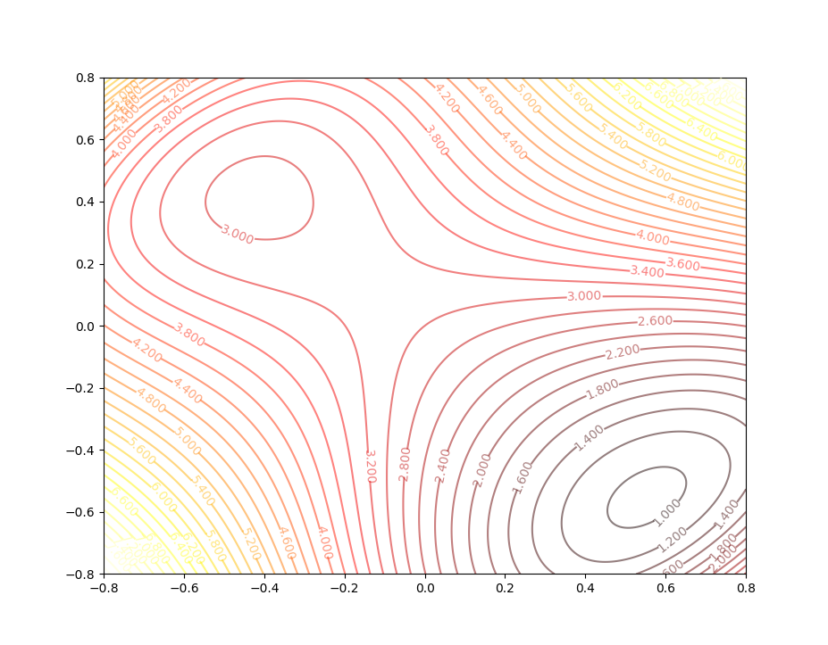

Performance Surfaces and Optimum Points(Part I)
Keywords: performance surfaces, optimum points
Neural Network Training Technique[^1]
In the articles posted before, several architectures of the neural networks had been proposed. And each neural network had its own learning rule, like, perceptron learning algorithm, Hebbian learning algorithm. What we should do when more and more neural networks come to accumulate is becoming complicated. If we can propose some general methods, we can train new architecture easily by simply modifying existing algorithms. Up to now, we can classify all training rules in three categories in a general way:
- Performance Learning
- Associative Learning
- Competitive Learning
Linear associator we discussed in ‘Hebbian Learning’ is a kind of associative learning, which is used to build a connection between two events. Competitive learning is a kind of unsupervised learning in which nodes of the neural network compete for the right to respond to a subset of the input data.[^2] The main topic we are going to discuss today is Performance Learning which is also a widely used training method in neural network projects. By the way, the categories of learning can be classified from variant views. So, this is not the only kind of classification.
Performance Learning and Performance Index
Training a network is to find suitable parameters of the model to meet our requirements for some specialized tasks. If we can measure how satisfied the neural network is for the task at a certain time, we can then decide what to do next to modify the parameters. Performance learning is the procedure that modifies the parameter of neural networks by their performance through a certain measurement of the performance of the neural network.
The measurement of the performance we investigate here is called performance index and its appearance is called performance surface. What we should also concern is the conditions for the existence of the minima or maxima. Because the minima or maxima decide the final result of the performance of the neural network for the task. In a word, what we need to do is optimizing the performance index by modifying parameters of the neural network to satisfy a certain task(training set).
Performance learning contains several different laws. And there are two steps involved in the optimization process generally:
- Define the concept what we called ‘performance’
- a quantitative measure of network performance is called performance index which has the properties when the neural network works well it has a lower value but when neural network works poorly it has a larger value
- Search parameters space to reduce the performance index
This is the heart of performance learning. After defining a performance or building a performance index, we cloud also analyze the characteristics of the performance index before searching for the minima. Because, if the performance index we had selected did not meet the conditions of the existence of minima, searching for a minimum is just a waste of time. Or we can also set the additional condition to guarantee the existence of a minimum point.
Taylor Series
When we have a suitable performance index, what we need is a certain algorithm or a framework to deal with the optimization task. To design such a framework, we should study the performance index function firstly. Taylor series is a powerful tool to analyze function.
Scalar form function
A function $F(x)$ is analytic function which means all derivatives of $F(x)$ exist. Then the Taylor series expansion about some nominal points $x^{\star}$
$$
\begin{aligned}
F(x)=F(x^{\star})&+\frac{d}{dx}F(x)|{x=x^{\star}}(x-x^{\star})\
&+\frac{1}{2}\frac{d^2}{d^2x}F(x)|{x=x^{\star}}(x-x^{\star})^2\
&\vdots \
&+\frac{1}{n!}\frac{d^n}{d^nx}F(x)|_{x=x^{\star}}(x-x^{\star})^n
\end{aligned}\tag{1}
$$
This series with infinity items can exactly equal to the origin analytic function.
If we only want to approximate the function in a small region near $x^{\star}$, only finite items in equation(1) are needed.
For instance, we have a function $F(x)=\cos(x)$ when $x^{\star}=0$, then:
$$
\begin{aligned}
F(x)=\cos(x)&=\cos(0)-\sin(0)(x-0)-\frac{1}{2}\cos(0)(x-0)^2+\cdots\
&=1-\frac{1}{2}x^2+\frac{1}{24}x^4+\cdots
\end{aligned}\tag{2}
$$
- $0^{\text{th}}$ order approximation of $F(x)$ near $0$ is $F(x)\approx F_0(x)=1$
- $1^{\text{st}}$ order approximation of $F(x)$ near $0$ is $F(x)\approx F_1(x)=1+0$
- $2^{\text{nd}}$ order approximation of $F(x)$ near $0$ is $F(x)\approx F_2(x)=1+0-\frac{1}{2}x^2$
- $3^{\text{rd}}$ order approximation of $F(x)$ near $0$ is $F(x)\approx F_3(x)=1+0-\frac{1}{2}x^2+0$
- $4^{\text{th}}$ order approximation of $F(x)$ near $0$ is $F(x)\approx F_4(x)=1+0-\frac{1}{2}x^2+0+\frac{1}{24}x^4$
Odd number$^{\text{th}}$ iterm is $0$ because of the value of $\sin(x)$ at $0$ is $0$
And the $0^{\text{th}},1^{\text{st}},2^{\text{nd}},3^{\text{rd}}$ and $4^{\text{th}}$ approximation of $F(x)$ looks like:

and, from the figure above we can observe that $F_0(x)$ can only approximate $F(x)$ at $x^{\star}=0$ point. While in the interval between $-1$ and $+1$, $F(x)$ can be precisely approximated by $F_2(x)$. In a more wider interval like $[-1.6,+1.6]$ to approximate $F(x)$, $4^{\text{th}}$ order Taylor series are needed. Then we can get a conclusion that if we want a certain precise extent in a relatively larger interval we need more items in the Taylor series. And we should pay attention to the interval out of the precise region, such as $F_2(x)$ in the interval $(-\infty,-1]\cup [1,+\infty)$ are going away from $F(x)$ as $x$ moving away from $x^{\star}=0$
Vector form function
When the performance index is a function of a vector $\boldsymbol{x}$, a vector form the Taylor series should be presented. And in the neural network, parameters are variables of the performance index so vector form Taylor series is the basic tool in performance learning. Function $F(\boldsymbol{x})$ can be decomposed in any precise:
$$
\begin{aligned}
F(\boldsymbol{x})=F(\boldsymbol{x}^{\star})&
+\frac{\partial}{\partial x_1}F(\boldsymbol{x})|{\boldsymbol{x}=\boldsymbol{x}^{\star}}(x_1-x_1^{\star})\
&+\frac{\partial}{\partial x_2}F(\boldsymbol{x})|_{\boldsymbol{x}=\boldsymbol{x}^{\star}}(x_2-x_2^{\star})+\cdots\
&+\frac{1}{2}\frac{\partial^2}{\partial^2 x_1}F(\boldsymbol{x})|_{\boldsymbol{x}=\boldsymbol{x}^{\star}}(x_1-x_1^{\star})^2\
&+\frac{1}{2}\frac{\partial^2}{\partial x_1 \partial x_2}F(\boldsymbol{x})|{\boldsymbol{x}=\boldsymbol{x}^{\star}}(x_1-x_1^{\star})(x_2-x_2^{\star})
+\cdots\
&\vdots
\end{aligned}\tag{3}
$$
if we notate the gradient as :
$$
\nabla F(x)=\begin{bmatrix}
\frac{\partial F}{\partial x_1}\
\frac{\partial F}{\partial x_2}\
\vdots\
\frac{\partial F}{\partial x_n}
\end{bmatrix}\tag{4}
$$
then the Taylor series can be written as:
$$
\begin{aligned}
F(\boldsymbol{x})=F(\boldsymbol{x}^{\star})&+(\boldsymbol{x}-\boldsymbol{x}^{\star})^T\nabla F(x)|{\boldsymbol{x}=\boldsymbol{x}^{\star}}\
&+\frac{1}{2}(\boldsymbol{x}-\boldsymbol{x}^{\star})^T\nabla^2 F(x)|{\boldsymbol{x}=\boldsymbol{x}^{\star}}(x_1-x_1^{\star})\
& \vdots
\end{aligned}\tag{5}
$$
The coefficients of the second-order item can be written in a matrix form, and it is also called the Hessian matrix:
$$
\nabla^2 F(x) = \begin{bmatrix}
\frac{\partial^2}{\partial^2 x_1}&\cdots&\frac{\partial^2}{\partial x_1 \partial x_n}\
\vdots&\ddots&\vdots \
\frac{\partial^2}{\partial x_n \partial x_1}&\cdots&\frac{\partial^2}{\partial^2 x_n}
\end{bmatrix}\tag{6}
$$
Hessian matrix has many beautiful properties, such as it is always
- Square matrix
- Symmetric matrix
In the matrix, the elements on the diagonal are $\frac{\partial^2 F}{\partial^2 x_i}$ is the $2^{\text{nd}}$ derivative along the $x_i$-axis and in the gradient vector, $\frac{d F}{d x_i}$ is the first derivative along the $x_i$-axis.
To calculate the $1^{\text{st}}$ or $2^{\text{nd}}$ derivative along arbitrary deriction $\boldsymbol{p}$, we have:
- $1^{\text{st}}$-order derivative along $\boldsymbol{p}$ : $\frac{\boldsymbol{p}^T\nabla F(\boldsymbol{x})}{||\boldsymbol{p}||}$
- $2^{\text{nd}}$-order derivative along $\boldsymbol{p}$ : $\frac{\boldsymbol{p}^T\nabla^2 F(\boldsymbol{x})\boldsymbol{p}}{||\boldsymbol{p}||^2}$
For instance, we have a function
$$
F(\boldsymbol{x})=x_1^2+2x_2^2\tag{7}
$$
to find the derivative at $\boldsymbol{x}^{\star}=\begin{bmatrix}0.5\0.5\end{bmatrix}$ in the direction $\boldsymbol{p}=\begin{bmatrix}2\-1\end{bmatrix}$, we get the derivative at $\boldsymbol{x}^{\star}=\begin{bmatrix}0.5\0.5\end{bmatrix}$:
$$
\nabla F|{\boldsymbol{x}=\boldsymbol{x}^{\star}} =
\begin{bmatrix}
\frac{\partial F}{\partial x_1}\
\frac{\partial F}{\partial x_2}
\end{bmatrix}\bigg|{\boldsymbol{x}=\boldsymbol{x}^{\star}}=\begin{bmatrix}
2x_1\
4x_2
\end{bmatrix}\bigg|_{\boldsymbol{x}=\boldsymbol{x}^{\star}}=\begin{bmatrix}
1\
2
\end{bmatrix}\tag{8}
$$
and the direction $\boldsymbol{p}=\begin{bmatrix}2\-1\end{bmatrix}$, the derivative is
$$
\frac{\boldsymbol{p}^T\nabla F(\boldsymbol{x}^{\star})}{||\boldsymbol{p}||}=
\frac{\begin{bmatrix}2&-1\end{bmatrix}
\begin{bmatrix}1\2\end{bmatrix}}{\sqrt{2^2+(-1)^2}}=\frac{0}{\sqrt{5}}=0\tag{9}
$$
$0$ is a special number in the whole real numbers set. And the derivative is zero also useful in optimization procedure. And to find a zero slop direction we should solve the equation:
$$
\frac{\boldsymbol{p}^T\nabla F(\boldsymbol{x}^{\star})}{||\boldsymbol{p}||}=0\tag{10}
$$
this means $\boldsymbol{p}$ is not $\boldsymbol{0}$ because $0$ length is insignificant. and $\boldsymbol{p}_{\text{unit}}=\frac{\boldsymbol{p}}{||\boldsymbol{p}||}$ is a unit vector along deriction $\boldsymbol{p}$ so this can be written as:
$$
\boldsymbol{p}_{\text{unit}}^T\nabla F(\boldsymbol{x}^{\star})=0\tag{11}
$$
which means $\boldsymbol{p}_{\text{unit}}$ is orthogonal to gradient $\nabla F(\boldsymbol{x}^{\star})$
Another special deriction is which one has the greatest slop. Assuming the deriction $\boldsymbol{p}_{\text{unit}}=\frac{\boldsymbol{p}}{||\boldsymbol{p}||}$ is the greatest slope, so:
$$
\boldsymbol{p}{\text{unit}}^T\nabla F(\boldsymbol{x}^{\star})=||\boldsymbol{p}{\text{unit}}^T|| \cdot ||\nabla F(\boldsymbol{x}^{\star})||\cos(\theta)\tag{12}
$$
has the greatest value. We know this can only happen when $\cos(\theta)=1$ which means the direction of the gradient has the greatest slop.

Necessary Conditions for Optimality
The main objective of performance learning is to minimize the performance index. So the condition of existence of minimum of performance index should be investagated:
- A strong minimum $\boldsymbol{x}$ which mean in any deriction $\boldsymbol{p}{\text{unit}}$ around this point with a short distance $\delta$ always has $F(\boldsymbol{x})<F(\boldsymbol{x}+\delta \boldsymbol{p}{\text{unit}})$, where $\delta \to 0$
- A weak minimum $\boldsymbol{x}$ which mean in any deriction $\boldsymbol{p}{\text{unit}}$ around this point with a short distance $\delta$ always has $F(\boldsymbol{x})\leq F(\boldsymbol{x}+\delta \boldsymbol{p}{\text{unit}})$, where $\delta \to 0$
- Global minimum is the minimum one of all weak or strong minimum set.
For instance,
$$
F(x)=3x^4-7x^2-\frac{1}{2}x+6\tag{13}
$$

- 2 local minimums at near $x_1=-1.1$ and near $x_2=1.1$
- near $x_2=1.1$ gives the global minimum
If the variable of function is a vector:
$$
F(\boldsymbol{x})=(x_2-x_1)^4+8x_1x_2-x_1+x_2+3\tag{14}
$$
and it looks like:

in 3-D space. And the contour plot of this function is:

There are three points in this contour figure:

and the pink points are the two local minimums, and the black points are called a saddle point.
These two examples illustrate the minimum points and saddle points. But what conditions are needed to confirm the existence?
First-order Conditions
Go back to the Taylor series with $\Delta x=x-x^{\star}\neq 0$, the first item of series is taking into account:
$$
\begin{aligned}
F(x)&=F(x^{\star})+\frac{d}{dx}F(x)|_{x=x^{\star}}(x-x^{\star})\
F(x^{\star}+\Delta x)&=F(x^{\star})+\nabla F(x)\Delta x
\end{aligned}\tag{15}
$$
when $x^{\star}$ is a candidate of minimum point, we want:
$$
F(x^{\star}+\Delta x)\geq F(x^{\star})\tag{16}
$$
so, in equation(15),
$$
\nabla F(x)\Delta x\geq 0 \tag{17}
$$
are needed. Considering another direction, if $x^{\star}$ is the minimum point, it also has:
$$
F(x^{\star}-\Delta x)=F(x^{\star})-\nabla F(x)\Delta x\geq F(x^{\star})\tag{18}
$$
then
$$
\nabla F(x)\Delta x\leq 0 \tag{19}
$$
To satisfy both equation(17) and equation(19) if and only if
$$
\nabla F(x)\Delta x=0\tag{20}
$$
Because $\Delta x\neq 0$, so we must have $\nabla F(x)$ when $x$ is the minimum point. $\nabla F(x)=0$ is a necessary but not sufficient condition. The first-order condition has been concluded above.
Second_order Condition
The first order condition does not give a sufficient condition. Now let’s consider the second-order conditon. With $\Delta\boldsymbol{x}=\boldsymbol{x}-\boldsymbol{x}^{\star}\neq \boldsymbol{0}$ and gradient equal to $\boldsymbol{0}$, and take them into equation(5) (in part I). Then the second order Taylor series is:
$$
F(\boldsymbol{\Delta\boldsymbol{x}-\boldsymbol{x}^{\star}})=F(\boldsymbol{x}^{\star})+\frac{1}{2}\Delta\boldsymbol{x}^T\nabla^2 F(x)|_{\boldsymbol{x}=\boldsymbol{x}^{\star}}\Delta\boldsymbol{x}\tag{21}
$$
When $||\Delta\boldsymbol{x}||$ is small, zero-order, first-order and second-order iterms of Taylor series are precise enough to approximate original function. When $F(\boldsymbol{x}^{\star})$ is a strong minimum, the second-order iterm should be:
$$
\frac{1}{2}\Delta\boldsymbol{x}^T\nabla^2 F(x)|_{\boldsymbol{x}=\boldsymbol{x}^{\star}}\Delta\boldsymbol{x}>0
$$
Recalling linear algebra knowledge, positive definite matrix $A$ is:
$$
\boldsymbol{z}^T A \boldsymbol{z}>0 \text{ for any } \boldsymbol{z}
$$
and positive semidefinite matrix $A$ is:
$$
\boldsymbol{z}^T A \boldsymbol{z}\geq0 \text{ for any } \boldsymbol{z}
$$
So when the gradient is $\boldsymbol{0}$ and second-order derivative are positive definite(semidefinite), this point is a strong(weak) minimum. And positive definite Hessian matrix is sufficient condition to a strong minimum point, but it’s not a necessary condition. Because when the Hessian matrix is $0$ the third-order item has to be calculated.
References
[^1]: Demuth, H.B., Beale, M.H., De Jess, O. and Hagan, M.T., 2014. Neural network design. Martin Hagan.
[^2]: https://en.wikipedia.org/wiki/Competitive_learning